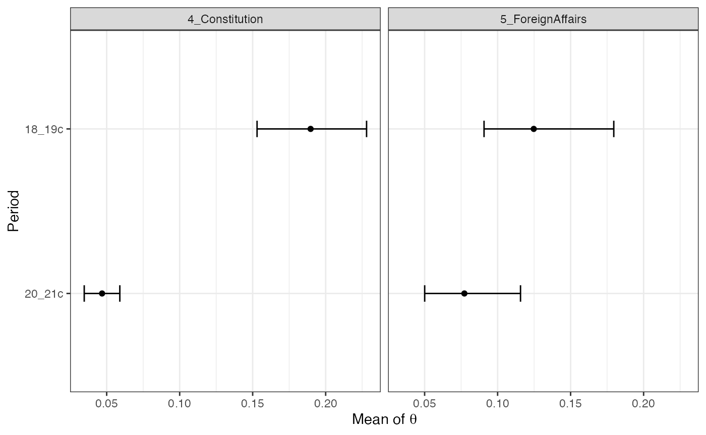

Scholars often have meta information about documents (e.g., authorship). The keyATM provides a way to incorporate covariate for document-topic distribution, using a Dirichlet-Multinomial regression (Mimno and McCallum 2008). Section 3 of Eshima et al. (2020) explain the covariate keyATM in details.
We follow the same procedure for the text preparation explained in Preparation and explain how to prepare covariates in this section.
The docvars() function in the quanteda package is especially useful to construct a vector or a dataframe of covariates because it ensures that documents and covariates are corresponding to each other. Since the keyATM does not take missing values, we recommend researchers to remove any missing values from covariates before extracting them using the docvars().
Moreover, we strongly recommend researchers to extract covariates after preprocessing texts because preprocessing steps will remove documents without any terms, which may result in any discrepancies between documents and covariates.
Therefore, the recommended procedure is (1) removing missing values from covariates, (2) preprocessing texts (including the process to discard documents that do not contain any words), and (3) extracting covariates using docvars() function.
In this example, we create a period dummy and a party dummy from the corpus and use them as covariates for the covariate keyATM. First, we extract covariates attached to each document in the corpus with the docvars() function.
vars <- docvars(data_corpus_inaugural) head(vars)
## Year President FirstName Party
## 1 1789 Washington George none
## 2 1793 Washington George none
## 3 1797 Adams John Federalist
## 4 1801 Jefferson Thomas Democratic-Republican
## 5 1805 Jefferson Thomas Democratic-Republican
## 6 1809 Madison James Democratic-RepublicanThere are six unique parties and 58 unique years. We categorize them and create a new set of covariates. First, we divide years into two period, before and after 1900. Then, we categorize parties into Democratic, Republican, and Others.
library(dplyr) vars %>% as_tibble() %>% mutate(Period = case_when(Year <= 1899 ~ "18_19c", TRUE ~ "20_21c")) %>% mutate(Party = case_when(Party == "Democratic" ~ "Democratic", Party == "Republican" ~ "Republican", TRUE ~ "Other")) %>% select(Party, Period) -> vars_selected table(vars_selected)
## Period
## Party 18_19c 20_21c
## Democratic 7 14
## Other 13 0
## Republican 8 16Since we have categorical variables, we set baselines with the factor() function.
vars_selected %>% mutate(Party = factor(Party, levels = c("Other", "Republican", "Democratic")), Period = factor(Period, levels = c("18_19c", "20_21c"))) -> vars_selected
The keyATM internally uses the model.matrix() function so that researchers can pass a formula to model covariates (for more detailed information, refer to formula). For example, in this example, we have a following matrix.
head(model.matrix(~ Party + Period, data = vars_selected))
## (Intercept) PartyRepublican PartyDemocratic Period20_21c
## 1 1 0 0 0
## 2 1 0 0 0
## 3 1 0 0 0
## 4 1 0 0 0
## 5 1 0 0 0
## 6 1 0 0 0We fit the model with the keyATM() function, passing covariates data and the formula with the model_settings argument. The text data is the same as what we use in the Base model. Please check this page for available options.
out <- keyATM(docs = keyATM_docs, no_keyword_topics = 5, keywords = keywords, model = "covariates", model_settings = list(covariates_data = vars_selected, covariates_formula = ~ Party + Period), options = list(seed = 250))
Once you fit the model, you can save the model with save() for replication. This is the same as the Base model.
We can use the top_words(), top_docs(), plot_modelfit(), and plot_pi() functions as in the base keyATM. The plot_alpha() is not defined for the covariate keyATM because we use covariates to model the prior for the document-topic distribution and \(\alpha\) does not explicitly appear in the model.
First, we use the output from the previous section and check the covariates used in the model. Note that covariates are standardized by default (i.e., each covariates to have zero mean and a standard deviation one).
This transformation does not change the substantive results as it is a linear transformation. Researchers can use raw values with standardize = FALSE in the model_settings argument.
Researchers can glance covariate information with the covariates_info() and the covariates_get() function will return covariates used in the fitted output.
covariates_info(out)
## Colnames: (Intercept), PartyRepublican, PartyDemocratic, Period20_21c
## Standardized: TRUE
## Formula: ~ Party + Period
##
## Preview:
## (Intercept) PartyRepublican PartyDemocratic Period20_21c
## 1 1 -0.8328937 -0.746848 -1.026136
## 2 1 -0.8328937 -0.746848 -1.026136
## 3 1 -0.8328937 -0.746848 -1.026136
## 4 1 -0.8328937 -0.746848 -1.026136
## 5 1 -0.8328937 -0.746848 -1.026136
## 6 1 -0.8328937 -0.746848 -1.026136used_covariates <- covariates_get(out) head(used_covariates)
## (Intercept) PartyRepublican PartyDemocratic Period20_21c
## 1 1 -0.8328937 -0.746848 -1.026136
## 2 1 -0.8328937 -0.746848 -1.026136
## 3 1 -0.8328937 -0.746848 -1.026136
## 4 1 -0.8328937 -0.746848 -1.026136
## 5 1 -0.8328937 -0.746848 -1.026136
## 6 1 -0.8328937 -0.746848 -1.026136The covariate keyATM can characterize the relations between covariates and document-topic distributions. We can obtain the marginal posterior mean of document-topic distribution conditioned on the covariates.
Suppose that we want to know document-topic distributions for each period. We use a binary variable Period20_21c, which indicates the period for this purpose.
The by_strata_DocTopic() function can display the marginal posterior means of document-topic distributions for each value of (discrete) covariates.
In the by_strata_DocTopic() function, we specify the variable we focus on in by_var argument and label each value in the variable (ascending order).
In this case, the Period20_21c equals zero indicates speeches in the 18th and 19th century and equals one for the speeches in the 20th and 21st century.
strata_topic <- by_strata_DocTopic(out, by_var = "Period20_21c", labels = c("18_19c", "20_21c"))
We can visualize results with the plot() function. The figure shows the marginal posterior means of document-topic distributions and the 90% credible intervals of them for each value of covariates.
The figure indicates that both topics are more likely to appear in the 18th and 19th century.

The figure can be saved with the save_fig() function.
save_fig(fig_doctopic, "figures/doctopic.pdf", width = 7, height = 3.5)
We can visualize results by covariate with by = "covariate" argument. The plot below combines two panels in the previous plot and display in the same panel.
Using the output of the keyATM, we can calculate 95% credible intervals of the differences in the mean of document-topic distribution.
Since we set the 18th and 19th century dummy as the baseline when constructing factor for this variable, the comparison is the relative increase or decrease from the 18th and 19th century to the 20th and 21st century.
theta1 <- strata_topic$theta[[1]] # 18_19c theta2 <- strata_topic$theta[[2]] # 20_21c theta_diff <- theta1[, c(4, 5)] - theta2[, c(4, 5)] # focus on two topics theta_diff_quantile <- apply(theta_diff, 2, quantile, c(0.05, 0.5, 0.95)) theta_diff_quantile
## 4_Constitution 5_ForeignAffairs
## 5% 0.1650697 0.0553605
## 50% 0.2485459 0.1192158
## 95% 0.3571780 0.1847093Although the covariate keyATM does not directly model topic-word distributions, the model can examine how topic-word distributions change across different values of document-level covariates. For this analysis, we need to use the keep argument in the keyATM() function to store Z and S. Then we pass the output with these stored values to the by_strata_TopicWord() function. The example below demonstrates top words associated to each topic for speeches from different parties using the Party covariate.
out <- keyATM(docs = keyATM_docs, no_keyword_topics = 5, keywords = keywords, model = "covariates", model_settings = list(covariates_data = vars_selected, covariates_formula = ~ Party + Period), options = list(seed = 250), keep = c("Z", "S")) strata_tw <- by_strata_TopicWord(out, keyATM_docs, by = as.vector(vars_selected$Party))
top_words(strata_tw, n = 3)
## $Other
## 1_Government 2_Congress 3_Peace 4_Constitution 5_ForeignAffairs
## 1 government congress [✓] world [✓] states country
## 2 executive [✓] policy freedom [✓] union citizens
## 3 within party [✓] let constitution [✓] war [✓]
## Other_1 Other_2 Other_3 Other_4 Other_5
## 1 government national best nation one
## 2 every made necessary people liberty
## 3 united system justice human time
##
## $Democratic
## 1_Government 2_Congress 3_Peace 4_Constitution 5_ForeignAffairs
## 1 government congress [✓] world [✓] states country
## 2 now policy new people war [✓]
## 3 action trade let constitution [✓] public
## Other_1 Other_2 Other_3 Other_4 Other_5
## 1 government national political people time
## 2 every men best nation every
## 3 united many service american one
##
## $Republican
## 1_Government 2_Congress 3_Peace 4_Constitution 5_ForeignAffairs
## 1 government congress [✓] world [✓] states country
## 2 law [✓] business america people war [✓]
## 3 laws [✓] policy freedom [✓] constitution [✓] free
## Other_1 Other_2 Other_3 Other_4 Other_5
## 1 government national best people one
## 2 every made political nation time
## 3 united many secure make never